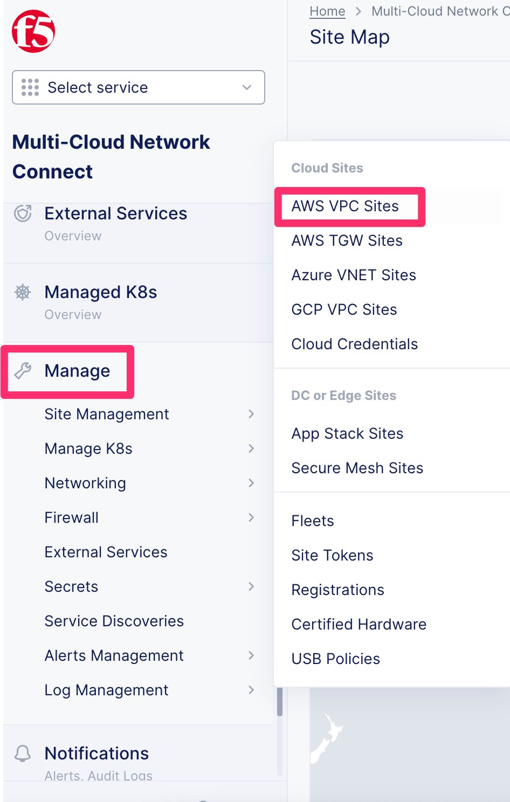

F5 Distributed Cloud Source | Edit on
Lab 2: Deploying an AWS VPC Site¶
In the previous lab you learned how to protect a resource that is already on the Public Internet.
In this lab we will look at two additional topologies where you can use a Customer Edge (CE).
F5 Distributed Cloud AWS VPC Site¶
In addition to protecting resources using F5 Distributed Cloud WAF/WAAP enforcement at an F5 Regional Edge (RE), you can also deploy a Customer Edge (CE) that may or may not be exposed to the public Internet.
In this exercise, we will review a CE that has already been deployed in an AWS VPC. We have also already created a shared F5 Distributed Cloud AWS VPC Site within the Distributed Cloud Console.
Once a CE has been deployed, it unlocks two additional topologies.
- Client -> RE -> CE -> Protected resource
Leveraging F5 Distributed Cloud REs to provide WAF and other services upstream, then proxying the clean traffic to the protected resource via the CE. It is recommended that a firewall rule be placed at the site with the CE to only allow traffic from an RE. This ensures that all traffic is scrubbed upstream before entering the site.
- Client -> CE -> Protected resource
In this scenario, the CE advertises the services directly. While this topology sacrifices some functionality such as volumetric DDoS protection and anycast availability from the Distributed Cloud global network, there are some use cases where it can be beneficial. One such example is when clients and protected resources are both local to each other without having to traverse the Internet.
With either toplogy, two encrypted tunnels are automatically created between the CE and the two closest REs. These redundant tunnels provide high availability in the unlikely event of an outage at a specific RE within the Distributed Cloud global network.
In the event of an Internet outage at a CE site, local survivability will continue to provide data plane services locally for a period of time. During this time, control plane services are suspended and will resume upon Internet connection reestablishment.
While a single CE may be adequate for non-production environments, a high-availability cluster of at least 3 CE’s is highly recommended for production.
Exercise 1: Introduction to F5 Distributed Cloud AWS VPC Site¶
Start in F5 Distributed Cloud Console and find the “AWS VPC Sites” menu item.
From the top left “Select service” and look under “All Services”->”Multi-Cloud Network Connect”

Go to Manage > Site Management > AWS VPC Sites
Find the “student-awsnet” site
In this lab environment we have already deployed a shared AWS VPC Site that we will use in this lab. Click on “student-awsnet”.

You will be able to observe several metrics about the health of the site. Spend a few minutes navigating the tabs at the top of the screen, to the right of the “Dashboard” tab.

NOTE: The health shown is specific to the CE site and the performance data shown is an aggregate of all applications whose data is passing through this CE.
{kind=link}
Exercise 2: F5 Distributed Cloud Simulator¶
Since the AWS site in this lab was pre-built for you, take a few minutes to walk through the process using the F5 Distributed Cloud Simulator.
https://simulator.f5.com/s/cloud2cloud_via_sites_brownfield/nav/aws/005/0
Clicking on the “Next” button in the top right of the simulator will allow you to see similar steps that were used to create the site.

Exercise 3 (Optional): Video walkthrough¶
NOTE: The term Distributed Cloud reflects the updated branding launched in 2022. Prior to that, the platform was called Volterra.